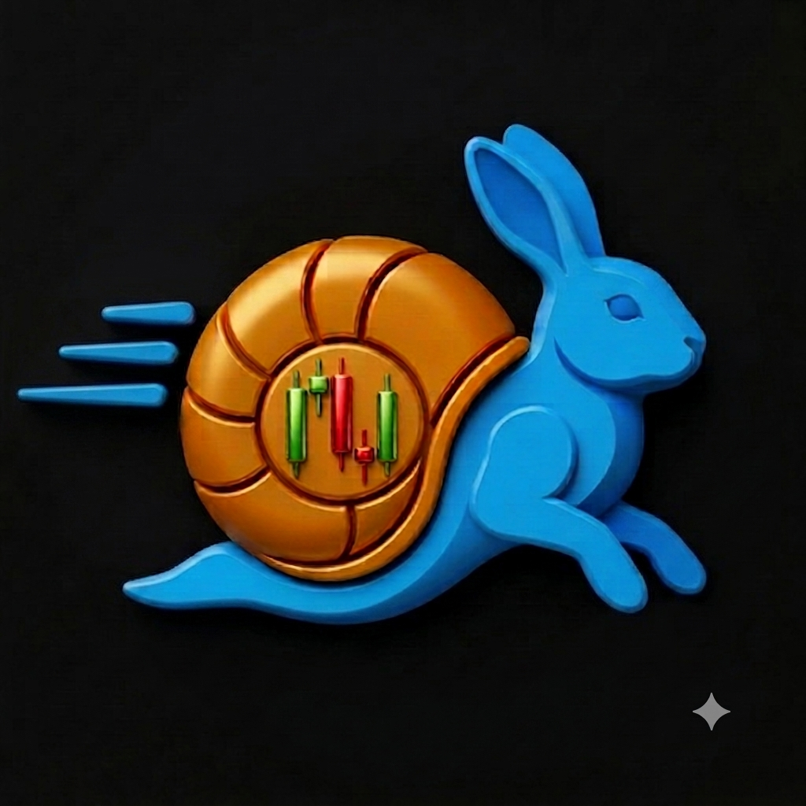
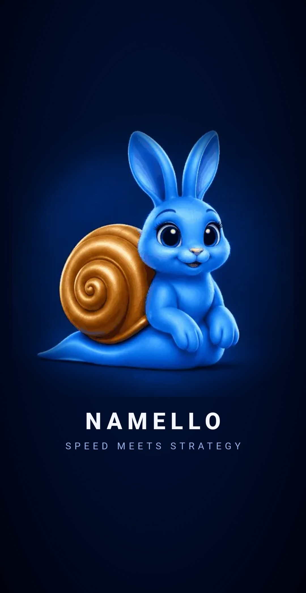
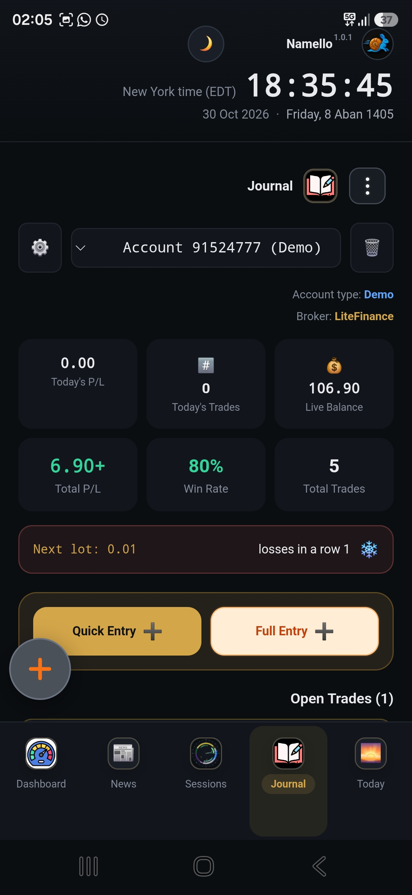
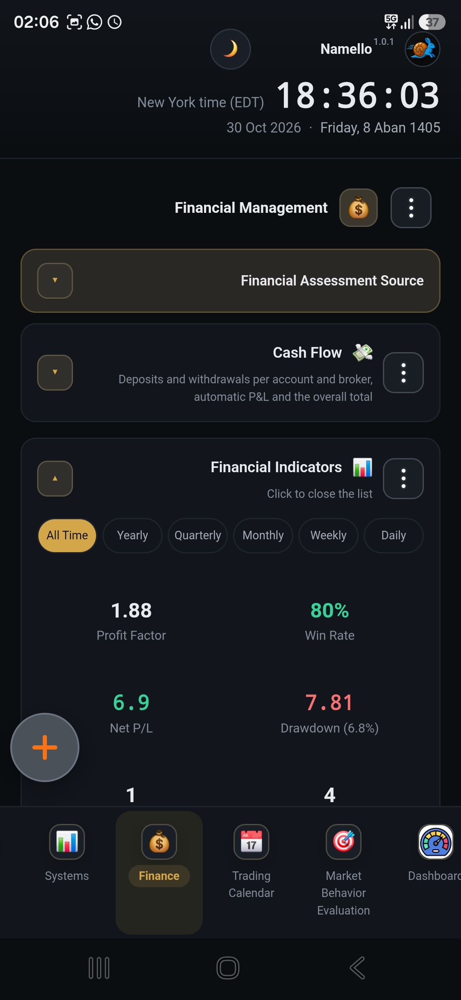
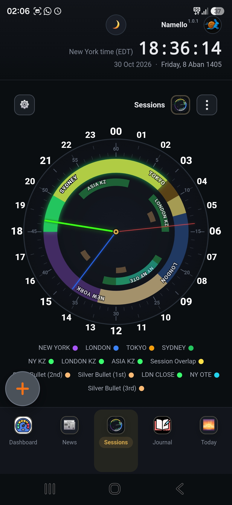
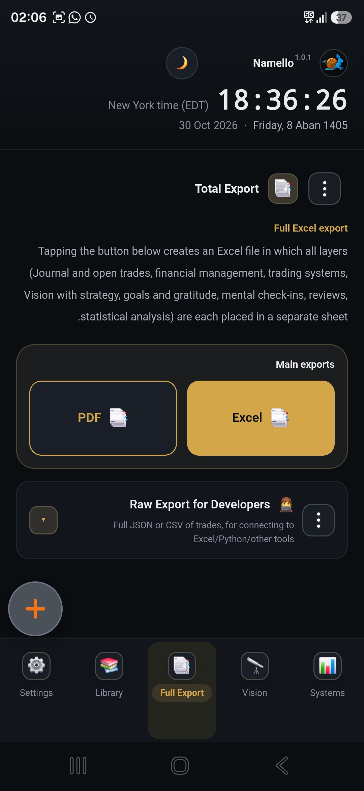
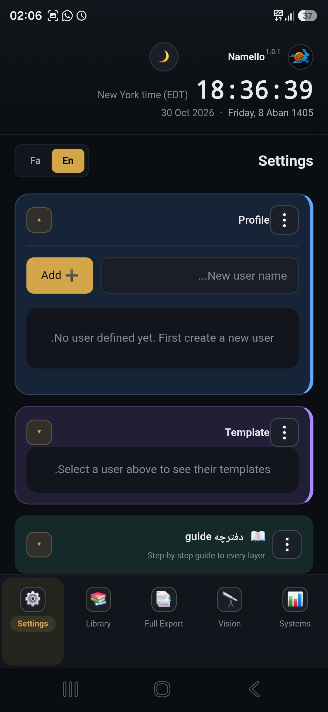
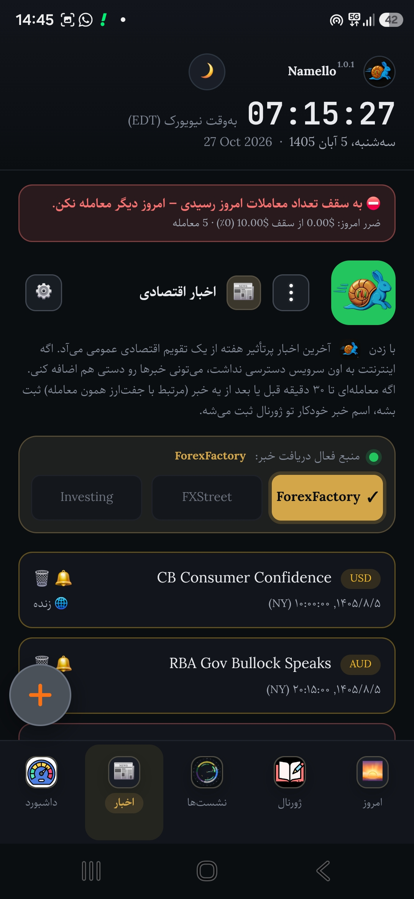
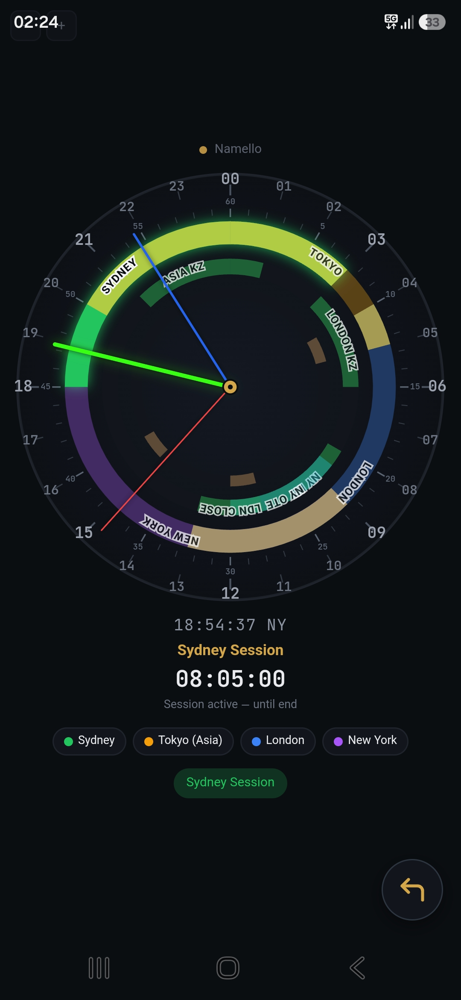

پایش راداری بازار
سشن فعال، روند و ساختار قیمت، نوسان، قدرت ارزها و رویدادهای اقتصادی را بررسی کن.
خروجی: فهرست نمادها و سناریوهای قابلبررسی
از ثبت دقیق هر پوزیشن تا بررسی ریسک، رفتار و کیفیت استراتژی؛ Namello تجربههای پراکنده معاملاتی را به سابقهای منظم و قابل تحلیل تبدیل میکند.
با صفحات اصلی برنامه آشنا شوید. برای مشاهده هر تصویر در اندازه بزرگتر، روی آن بزنید.






تصاویر، نمایی از محیط برنامه هستند؛ امکانات قابل مشاهده ممکن است بر اساس نسخه و سطح دسترسی متفاوت باشند.
نماد نملو از همراهی دو ویژگی الهام گرفته است: خرگوش یادآور سرعت، هوشیاری و واکنش بهموقع است؛ حلزون نماد صبر، استمرار و حرکت پیوسته، حتی با گامهای کوچک. کنار هم، این دو تصویر تعادلی را روایت میکنند که در معاملهگری اهمیت دارد: سریع و آماده بودن، اما نه شتابزده؛ صبور و منظم ماندن، اما نه متوقف. نملو میخواهد یادآور همین مسیر باشد؛ تصمیمگیری آگاهانه، ثبت تجربه و پیشرفت قدمبهقدم.
نملو برای همراهی با چرخهای پیوسته طراحی شده است: ثبت اطلاعات، مشاهده تصویر کلی، بررسی جزئیات و یادگیری از تجربهها.
معاملات و تجربههای خود را در ژورنال نگهداری کنید.
از داشبورد برای دیدن نمای کلی فعالیت و عملکرد کمک بگیرید.
نتایج مالی، جلسات بازار و سوابق خود را مرور کنید.
نقاط قوت و زمینههای قابل بهبود را از تجربهها استخراج کنید.
یک چرخه منظم برای تبدیل مشاهده بازار به تصمیم کنترلشده، ثبت داده و یادگیری. هدف، بهبود کیفیت فرآیند و سنجشپذیر کردن تصمیمهاست؛ نه تضمین سود.
سشن فعال، روند و ساختار قیمت، نوسان، قدرت ارزها و رویدادهای اقتصادی را بررسی کن.
خروجی: فهرست نمادها و سناریوهای قابلبررسیشرایط ورود، تایمفریم، جهت معامله، نقطه ابطال و نسبت سود به زیان مورد انتظار را از قبل مشخص کن.
خروجی: پلن معاملاتی قابلآزمونآیا ستاپ با قوانینت منطبق است؟ خبر پرریسک نزدیک نیست؟ حد ضرر و دلیل ورود روشن است؟
اگر پاسخ منفی است: عدم ورود و ثبت دلیلریسک مجاز، فاصله حد ضرر، اندازه موقعیت و سقف زیان روزانه را محاسبه کن؛ اگر ریسک پذیرفتنی نیست، معامله را حذف کن.
خروجی: حجم متناسب با ریسکطبق پلن وارد شو؛ حد ضرر، حد سود و قواعد جابهجایی آنها را رعایت کن و از تصمیمهای احساسی خارج از پلن پرهیز کن.
خروجی: اجرای قابلمقایسه با برنامهنماد، زمان و سشن، جهت، ورود و خروج، حجم، هزینه، نتیجه، تصویر چارت و وضعیت ذهنی را ثبت کن.
خروجی: داده کامل و قابلاعتمادExpectancy، میانگین R، نرخ برد، افت سرمایه، سود خالص، عملکرد سشن و نماد و میزان پایبندی به پلن را بررسی کن.
خروجی: نقاط قوت، خطاهای تکراری و فرضیه بهبوددر هر دوره فقط یک یا چند متغیر مشخص را تغییر بده؛ مثل ساعت معامله، شرط ورود، حد ضرر، خروج یا فیلتر خبر.
خروجی: نسخه جدید و مستند از قوانینتغییرات را روی داده تاریخی و سپس حساب آزمایشی یا اجرای محدود آیندهنگر بسنج؛ هزینه، لغزش و افت سرمایه را هم لحاظ کن.
اگر پایدار نبود: بازگشت به نسخه قبل؛ اگر معتبر بود: ادامه با ریسک کنترلشدهمعاملهای که ثبت نشود، ممکن است بهمرور به خاطرهای مبهم تبدیل شود. ژورنال نملو برای نگهداری سوابق و آسانتر کردن بازگشت به تصمیمها و نتایج گذشته است.
معاملات را ثبت کنید تا اطلاعات و نتیجه هر تجربه در کنار سوابق دیگر قرار بگیرد و بررسی گذشته تنها به حافظه وابسته نباشد.
به معاملات ثبتشده بازگردید و فعالیت خود را در طول زمان مرور کنید؛ تاریخچهای مرتب از مسیر معاملاتی خود بسازید.
بررسی تجربههای موفق و ناموفق میتواند به شناسایی عادتها و خطاهای تکرارشونده کمک کند.
ثبت و مرور را به بخشی از روال کاری تبدیل کنید تا ارزیابی تصمیمها به کاری منظم و قابل پیگیری تبدیل شود.
نملو تلاش میکند فاصله میان انجام معامله، ثبت جزئیات و تحلیل نتیجه را کوتاه کند؛ تا اطلاعات ارزشمند معامله با کمترین اصطکاک در دسترس بررسی و یادگیری باشد.
فرآیند ثبت برای ورود سریع اطلاعات طراحی شده است، در عین حال امکان نگهداری جزئیات مهم معامله را فراهم میکند؛ از مشخصات ورود و خروج و حجم و نتیجه گرفته تا زمینه و توضیحات تکمیلی. هدف، ثبت دقیقتر بدون تبدیل ژورنالنویسی به کاری زمانبر است.
با استفاده از تصویر مرتبط با معامله، سامانه میتواند برخی پارامترهای قابل تشخیص را استخراج و به ثبت اطلاعات کمک کند. مقادیر استخراجشده باید پیش از ذخیره توسط کاربر بازبینی و در صورت نیاز اصلاح شوند؛ زیرا کیفیت تصویر، چیدمان پلتفرم و وضوح اعداد بر نتیجه اثر میگذارند.
با تحلیل سوابق ثبتشده و شرایطی که برای معامله تعریف شدهاند، میتوان برآوردی آماری از احتمال موفقیت یا نتیجه در سناریوهای مشابه ارائه کرد. اعتبار این برآورد به تعداد و کیفیت نمونههای مشابه وابسته است و احتمال آماری، تضمین نتیجه معامله بعدی یا سیگنال قطعی خریدوفروش نیست.
ارزیابی عملکرد تنها به سود و زیان محدود نمیشود؛ شرایط بازار، تناسب استراتژی، تغییر مزیت معاملاتی، ریسک و الگوهای رفتاری نیز میتوانند در کنار هم بررسی شوند.
شاخصهایی مانند Profit Factor، Expectancy، Drawdown، Recovery Factor و معیارهای ریسک در کنار تحلیل مونتکارلو به درک بهتر پراکندگی نتایج و مسیرهای احتمالی سرمایه کمک میکنند؛ نه پیشبینی قطعی آینده.
موتورهای Regime Transition، Forecast، Conditional Risk، Strategy Fit، Adaptive Decay، Regime × Psychology و Decision Center ابعاد متفاوتی از بازار، عملکرد و تصمیمگیری را بررسی میکنند.
نکته مهم: خروجیهای استخراج تصویر و تحلیل آماری ابزار کمکی هستند. بررسی نهایی اطلاعات، تصمیم معاملاتی و مدیریت ریسک بر عهده معاملهگر است.
یک معامله فقط یک عدد سود یا زیان نیست. پشت هر نتیجه، تصمیم، شرایط بازار، هزینه، شیوه اجرا و رفتار معاملهگر قرار دارد. چشمانداز Trade Intelligence این است که این اجزا را کنار هم قرار دهد و به بینشهای قابلاستفاده برای بهبود تبدیل کند.
برنامه پیش از ورود را با اجرای واقعی مقایسه کنید: دلیل ورود، نقطه ابطال، ریسک پذیرفتهشده، حد ضرر و هدف چه بودند؟ آیا معامله مطابق برنامه مدیریت شد؟
عملکرد استراتژی را در روند، رنج، نوسان بالا و پایین و همچنین جلسات معاملاتی مقایسه کنید تا مشخص شود مزیت شما در چه محیطی بهتر ظاهر میشود.
سود ناخالص را از نتیجه خالص جدا کنید و اثر اسپرد، کمیسیون، سوآپ و لغزش قیمت را در نمادها و ساعات مختلف بسنجید.
با استفاده از مسیر واقعی قیمت، سناریوهای خروج متفاوت را بررسی کنید؛ از برداشت زودتر سود تا خروج پلهای یا حفظ حد ضرر اولیه.
رابطه وضعیت ذهنی و رفتار را با نتایج بررسی کنید؛ مانند عجله، ترس از دستدادن فرصت، خستگی، اعتمادبهنفس بیشازحد یا تلاش برای جبران ضرر.
معاملات پیرامون رویدادهای اقتصادی را مرور کنید و ببینید نوسان، هزینه اجرا و نتیجه معاملات شما در آن بازهها چه تفاوتی داشته است.
از دل سوابق، چند اولویت مشخص برای هفته بعد استخراج کنید و با تمرینهای کوچک و شاخصهای قابلاندازهگیری، پیشرفت را دنبال کنید.
با شبیهسازی توالیهای مختلف برد و باخت، اثر ریسک هر معامله بر افت سرمایه و تابآوری حساب را در سناریوهای گوناگون بررسی کنید.
این بخش نقشه راه و چشمانداز توسعه هوشمندی معاملاتی Namello را معرفی میکند؛ بهمعنای فعالبودن همه این ابزارها در نسخه فعلی برنامه نیست. هر قابلیت پس از پیادهسازی، آزمون و تأیید دادههای موردنیاز، با وضعیت روشن معرفی خواهد شد.
داشبورد نملو فقط یک صفحه نمایش سود و زیان نیست؛ نقطهای برای کنار هم دیدن کیفیت عملکرد، روندها، رفتار معاملاتی و ریسک است. از نمای کلی شروع کنید و برای شناخت علت نتیجهها به ارزیابی پیشرفته بروید.
نتایج معاملات ثبتشده را بهصورت تجمیعی مرور کنید؛ شاخصهایی مانند نرخ برد، میانگین سود و زیان، نسبت سود به زیان و امید ریاضی کمک میکنند بفهمید نتیجهها چگونه ساخته شدهاند.
آمار را در کنار تعداد معاملات و کیفیت داده بخوانید. فاصله اطمینان امید ریاضی و شاخصهایی مانند SQN کمک میکنند بین یک نتیجه اتفاقی و شواهدی که ارزش بررسی بیشتر دارند تفاوت بگذارید.
مجموعهای از سنجههای ریسک و بازده، تحلیل شرایط بازار، بررسی رفتار و موتورهای تصمیمیار را در یک چارچوب توضیحپذیر گرد هم میآورد. هر نتیجه باید همراه با شواهد عددی و محدودیت داده تفسیر شود.
الگوهایی مانند معاملات انتقامی، افزایش حجم پس از زیان، بیشمعاملهگری، وضعیت Tilt و امتیاز انضباط را بررسی کنید و آنها را با نتیجه معاملات و وضعیت ذهنی ثبتشده مقایسه کنید.
این بخش مجموعهای از معیارهای مکمل را ارائه میکند؛ هیچ شاخصی بهتنهایی برای قضاوت درباره یک سیستم معاملاتی کافی نیست.
Profit Factor نسبت مجموع سودها به مجموع زیانهاست. Expectancy میانگین نتیجه مورد انتظار هر معامله است. Payoff Ratio میانگین سود معامله برنده را با میانگین زیان معامله بازنده مقایسه میکند. Win Rate سهم معاملات برنده را نشان میدهد؛ نرخ برد بالا بدون توجه به اندازه سود و زیان کافی نیست.
Maximum / Average Drawdown بیشترین و میانگین افت از قله موجودی را نشان میدهد. Recovery Factor سود خالص را نسبت به افت سرمایه میسنجد. Time Underwater مدت ماندن حساب زیر قله قبلی و Ulcer Index شدت و تداوم افتها را منعکس میکنند.
Kelly، Half-Kelly و Quarter-Kelly چارچوبهایی برای برآورد اندازه نظری موقعیت بر اساس مزیت و نسبت سود به زیاناند؛ نسخههای کسری محافظهکارانهترند. VaR و CVaR برآوردی از زیان در سطح اطمینان و میانگین زیان در دنباله بدتر توزیع ارائه میکنند.
SQN کیفیت عملکرد تعدیلشده با پراکندگی نتایج را خلاصه میکند. Skewness چولگی و Kurtosis کشیدگی توزیع را توصیف میکنند. Equity R² میزان نزدیکی منحنی سرمایه به روند برازششده را میسنجد و Runs Test به بررسی تصادفیبودن توالی برد و باخت کمک میکند.
Edge Drift تغییر امید ریاضی در پنجرههای زمانی را دنبال میکند تا نشانههای فرسایش مزیت آشکار شوند. Profit Concentration نشان میدهد چه مقدار از سود به تعداد محدودی معامله یا بازه وابسته است. فاصله اطمینان و امتیاز کیفیت داده نیز مانع قطعیتبخشی بیش از حد به نمونههای کوچک میشوند.
با بازنمونهگیری از نتایج معاملات، مسیرهای متعدد و سناریوهای احتمالی سرمایه را بررسی میکند؛ از جمله پراکندگی نتایج و احتمال رسیدن به هدف یا مواجهه با افت شدید. شبیهسازی سناریو است، نه پیشبینی قطعی آینده.
این موتورها جنبههای متفاوتی از شرایط بازار، مزیت سیستم، ریسک و رفتار را بررسی میکنند تا خروجی ارزیابی از یک عدد ساده فراتر برود.
تغییر وضعیت بازار را بررسی میکند؛ برای مثال جابهجایی میان روند و دامنه نوسانی یا میان نوسان کم و زیاد. هدف، هشدار درباره تغییر محیطی است که ممکن است عملکرد قبلی استراتژی در آن تکرار نشود.
با تکیه بر دادههای تاریخی و سناریوهای تعریفشده، چشماندازهای احتمالی عملکرد را میسنجد. خروجی آن باید بهعنوان سناریو و برآورد مشروط خوانده شود، نه سیگنال خریدوفروش یا تضمین نتیجه.
ریسک را در شرایط مختلف بازار و زمینههای معاملاتی مقایسه میکند؛ بهجای یک میانگین کلی، میپرسد در کدام وضعیتها افت، نوسان یا احتمال زیان بیشتر شده است.
بررسی میکند هر سیستم یا روش معاملاتی با کدام جلسه، روز هفته، ساعت ورود، وضعیت بازار و جهت روند سازگارتر بوده است؛ همچنین اثر ترکیب سیستم و زمینه را میسنجد.
امید ریاضی و کیفیت مزیت را در پنجرههای متحرک دنبال میکند تا کاهش تدریجی کارایی یا تغییر رفتار سیستم زودتر دیده شود؛ افت موقت را نباید بدون بررسی حجم نمونه، فرسایش قطعی دانست.
نتایج را در تقاطع وضعیت بازار و وضعیت ذهنی معاملهگر بررسی میکند؛ مثلاً مشخص میکند عملکرد در یک رژیم خاص، هنگام استرس یا افت تمرکز چگونه تغییر کرده است؛ البته به ثبت کافی داده ذهنی نیاز دارد.
یافتههای تحلیلی را به جمعبندی، هشدار و اقدامهای قابل بررسی تبدیل میکند؛ مانند بازبینی یک زمینه نامناسب، کنترل اندازه موقعیت یا بررسی دوباره یک سیستم. این مرکز جایگزین قضاوت و مدیریت ریسک معاملهگر نیست.
روش تفسیر: نتایج به دادههای ثبتشده، تعداد نمونه و پوشش اطلاعات وابستهاند. خروجی موتورهای تحلیلی ابزار شناخت و بازبینی است و تضمینکننده سود یا پیشبینی قطعی بازار نیست.
نتیجه مالی بخش مهمی از ارزیابی فعالیت معاملاتی است. لایه مالی نملو فضایی اختصاصی برای مراجعه به اطلاعات و نتایج مالی در کنار سایر سوابق فراهم میکند.
اطلاعات مالی مرتبط با فعالیت خود را در بخش مربوط دنبال کنید و برای ارزیابی، به آنها بازگردید.
نتیجه را جدا از تجربه و تصمیمی که به آن منتهی شده نبینید؛ مرور همزمان سوابق و نتیجهها تصویر کاملتری میسازد.
بازارهای مالی در مناطق زمانی مختلف فعالیت میکنند. شناخت زمان جلسات مهم میتواند به برنامهریزی روزانه و توجه بهتر به ریتم بازار کمک کند.
جلسات معاملاتی مهم بازارهای جهانی را در یک بخش اختصاصی دنبال کنید و دید منظمتری از زمانبندی آنها داشته باشید.
ابزارهای زمانی مرتبط با جلسات برای آگاهی از شروع یا پایان بازههای معاملاتی در نظر گرفته شدهاند. منطقه زمانی دستگاه را بررسی کنید.
در بازارهای مالی، زمان انتشار خبرهای اقتصادی میتواند بهاندازه خود خبر اهمیت داشته باشد. لایه خبر نملو برای کمک به توجه به زمان رویدادهای اقتصادی و آمادهشدن پیش از انتشار آنها طراحی شده است.
نملو میتواند پیش از زمان اعلامشده یک رویداد خبری اقتصادی، هشدار یادآوری نمایش دهد تا فرصت داشته باشید وضعیت بازار و برنامه معاملاتی خود را بررسی کنید. زمانبندی این هشدار ۳۰ ثانیه پیش از زمان رویداد در نظر گرفته شده است.
اعلانهای مرتبط با خبر در تنظیمات اعلانهای متنی، کنترل جداگانه دارند. به این ترتیب میتوانید این نوع یادآوری را مستقل از سایر اعلانها فعال یا غیرفعال کنید و اعلانهای موردنیاز خود را مطابق ترجیحتان مدیریت کنید.
یادآوری پیش از انتشار خبر به شما کمک میکند از غافلگیرشدن نسبت به زمان رویدادهای برنامهریزیشده کمتر شود و برای بررسی شرایط، مدیریت ریسک یا بازبینی تصمیم معاملاتی فرصت داشته باشید. این هشدار صرفاً یادآور زمان است و بهمعنای توصیه به ورود یا خروج از معامله نیست.

توجه: زمان هشدار بر مبنای زمان رویداد ثبتشده و تنظیمات ساعت دستگاه معنا پیدا میکند. نمایش اعلان به فعالبودن گزینه مربوط و مجوز اعلان در اندروید وابسته است. لایه خبر در این معرفی بهعنوان ابزار یادآوری زمان رویداد توصیف شده و نباید آن را سرویس سیگنالدهی یا تضمینکننده واکنش بازار تلقی کرد.
اطلاعات زمانی ارزشمندتر میشوند که بتوانید به آنها بازگردید و در جریان کار روزانه به ابزارهای موردنیاز دسترسی داشته باشید.
از بخش خروجی برای دسترسی به گزینههای ارائهشده جهت خروجیگرفتن از اطلاعات و سوابق استفاده کنید. دامنه امکانات به سطح دسترسی نسخه بستگی دارد.
برای گزینههای کنترلی و ترجیحات برنامه به بخش تنظیمات مراجعه کنید. گزینههای قابل مشاهده ممکن است با نسخه و سطح دسترسی تفاوت داشته باشند.
در صورت فعالبودن مجوزهای لازم دستگاه، میانبر شناور Namello میتواند دسترسی به ابزارهایی مانند MT5 و TradingView و بازگشت به نملو را آسانتر کند.
هدف از کنار هم قرار گرفتن این بخشها، کاهش پراکندگی ابزارها و سادهتر کردن رفتوآمد میان ثبت سوابق، مشاهده بازار و مرور عملکرد است.
بخش تنظیمات برای مدیریت قابلیتهای کمکی برنامه و هماهنگکردن آنها با شیوه کار شما در نظر گرفته شده است. بعضی امکانات، بهویژه اعلانها و پنجره شناور، به اجازههای سیستمعامل و فعالسازی آگاهانه کاربر نیاز دارند.
اعلانها کمک میکنند رویدادها و یادآوریهای مهم را بدون نیاز به باز نگهداشتن دائمی برنامه دنبال کنید. کاربر میتواند اعلانهای در دسترس را مطابق نیاز خود فعال یا غیرفعال کند. نمایش اعلانها به اجازه اعلان در تنظیمات اندروید و روشنبودن گزینه مربوط در نملو وابسته است؛ بنابراین در صورت خاموش بودن هرکدام، اعلان مربوط نمایش داده نمیشود. هدف، اطلاعرسانی کاربردی و قابلکنترل است، نه ایجاد مزاحمت یا ارسال پیامهای ناخواسته.
با فعالسازی آگاهانه پنجره شناور، میانبر نملو میتواند روی صفحه برنامههای دیگر نیز در دسترس باشد تا برای جابهجایی میان ابزارهای معاملاتی، لازم نباشد هر بار به صفحه اصلی گوشی برگردید. این قابلیت فقط پس از اجازه صریح کاربر برای نمایش روی سایر برنامهها فعال میشود و هر زمان میتوان آن را از تنظیمات نملو غیرفعال کرد؛ با غیرفعالسازی، پنجره شناور بسته میشود.
از پنجره شناور میتوان برای دسترسی سریع به MetaTrader 5 (MT5) و TradingView استفاده کرد؛ دو ابزار شناختهشدهای که معاملهگر ممکن است برای مشاهده نمودارها یا پیگیری محیط معاملاتی به آنها مراجعه کند. این میانبرها صرفاً برنامه یا ابزار انتخابشده را برای دسترسی سریع باز میکنند و بهمعنای اجرای خودکار معامله، ارسال سفارش یا ارائه سیگنال نیستند. در صورت نصبنبودن برنامه مقصد، رفتار بازشدن آن به امکانات سیستمعامل و برنامه مربوط بستگی دارد.
دکمه بازگشت در پنجره شناور، راهی کوتاه برای برگشتن به نملو پس از مراجعه به MT5، TradingView یا برنامههای دیگر فراهم میکند. این قابلیت برای حفظ پیوستگی جریان کار طراحی شده است: مشاهده بازار، بازگشت به ژورنال و ثبت یا مرور تجربه، بدون جستوجوی دوباره آیکون نملو در میان برنامههای باز.
ویجت جلسات بازار، زمان باقیمانده تا شروع یا پایان بازههای مهم معاملاتی را بهشکل دیداری نمایش میدهد تا بتوانید ریتم زمانی بازارهای جهانی را سریعتر بررسی کنید. تصویر زیر، نمای ویجت نملو را نشان میدهد. زمانبندی نمایشدادهشده بر اساس ساعت و منطقه زمانی دستگاه تفسیر میشود؛ برای نتیجه درست، تنظیمات تاریخ، ساعت و منطقه زمانی گوشی باید صحیح باشد. ویجت ابزار اطلاعرسانی زمانی است و وضعیت نقدشوندگی یا جهت حرکت بازار را پیشبینی نمیکند.

نملو برای قابلیتهایی مانند نمایش پنجره شناور یا ارسال اعلان، فقط به مجوزهای مرتبط با همان قابلیت نیاز دارد. فعالسازی این دسترسیها باید با انتخاب کاربر انجام شود و کاربر میتواند از تنظیمات گوشی یا خود برنامه آنها را مدیریت کند. اگر مجوزی داده نشده باشد، قابلیت وابسته ممکن است در دسترس نباشد؛ این موضوع به معنی اختلال در ثبت اطلاعات اصلی ژورنال نیست.
توجه: نام گزینهها، دسترسپذیری و جزئیات عملکرد ممکن است با نسخه برنامه، نسخه اندروید و سطح اشتراک تفاوت داشته باشد. قابلیت شناور و برخی امکانات تنظیمات در صورت نیاز به مجوز سیستمعامل، بدون اجازه کاربر فعال نمیشوند.
برخی لایهها و امکانات پیشرفته نملو در قالب دسترسی Pro ارائه میشوند. بخشهایی مانند داشبورد، لایه مالی، جلسات بازار و امکانات خروجی ممکن است مشمول سطح دسترسی اشتراکی باشند. وضعیت دقیق امکانات، دوره آزمایشی و شرایط خرید را از صفحه اشتراک داخل نسخه نصبشده بررسی کنید.
ما تلاش میکنیم شرایط دسترسی روشن باشد؛ امکانات و شیوه ارائه اشتراک ممکن است با بهروزرسانیهای برنامه تغییر کند.
برای شروع، یادگیری امکانات، رفع مشکل یا ارتباط با تیم نملو، مسیر مناسب را انتخاب کنید.
برای آشنایی با محیط برنامه و ثبت نخستین معامله، مسیر کار و تصاویر واقعی برنامه را ببینید.
مشاهده مسیر کار ←راهنمای ژورنال، داشبورد، تحلیل پیشرفته، جلسات بازار و تنظیمات در بخشهای معرفی محصول قرار دارد.
راهنمای داشبورد ←پاسخ پرسشهای عمومی درباره ماهیت نملو، تحلیلها و اشتراک.
مشاهده پرسشها ←نسخه برنامه، مدل دستگاه، نسخه اندروید و مراحل بازتولید مشکل را بنویسید. رمزها و اطلاعات حساس را ارسال نکنید.
ارسال ایمیل به پشتیبانی ←در حال حاضر درخواستها از طریق ایمیل دریافت میشوند و سامانه تیکت یا شماره پیگیری خودکار فعال نیست.
namellotradingjournal@gmail.comاین صفحه معرفی وبسایت را پوشش میدهد؛ شیوه پردازش دادههای داخل اپ باید در سیاست اختصاصی اپ و بر اساس رفتار واقعی نسخه منتشرشده تکمیل شود.
ترجیح زبان در حافظه محلی مرورگر (localStorage) ذخیره میشود. پیوند ایمیل، برنامه ایمیل انتخابی شما را باز میکند.
جزئیات جمعآوری، استفاده، همگامسازی، نگهداری و حذف دادههای اپ باید پیش از انتشار نهایی با پیادهسازی واقعی و سرویسهای متصل تطبیق داده شود.
Namello ابزار ثبت و مرور سوابق معاملاتی است؛ کارگزار یا پلتفرم اجرای سفارش و مشاور سرمایهگذاری نیست.
تحلیلها به کیفیت داده و اندازه نمونه وابستهاند و تضمینکننده نتایج آینده یا سیگنال قطعی نیستند. تصمیم معاملاتی و مدیریت ریسک بر عهده کاربر است.
خیر. نملو ژورنال معاملاتی و ابزار مرور عملکرد است و جایگزین کارگزار یا پلتفرم اجرای سفارش نیست.
خیر. هدف نملو کمک به ثبت و بررسی سوابق خود کاربر است، نه ارائه سیگنال یا توصیه سرمایهگذاری.
ثبت منظم امکان بازبینی تصمیمها و مقایسه تجربهها را فراهم میکند و میتواند به شناخت بهتر عادتها و زمینههای قابل بهبود کمک کند.
شرایط و وضعیت دسترسی را از صفحه اشتراک و پیامهای داخل نسخه نصبشده برنامه بررسی کنید.
پرسش، پیشنهاد یا بازخورد شما به بهتر شدن تجربه Namello کمک میکند.
نملو ابزار ثبت و مرور عملکرد معاملاتی است؛ محتوای آن توصیه مالی، پیشنهاد خریدوفروش یا تضمین سود محسوب نمیشود. تصمیمهای معاملاتی و مدیریت ریسک بر عهده کاربر است.
Relative currency strength derived from percentage changes in selected instruments. This is a simple calculation from received quotes, not a trading signal.
Waiting for valid market data…
A descriptive summary of instrument moves will appear after valid quotes arrive.
Check release times for inflation, employment, interest-rate decisions, and other market-moving events using a specialist calendar.
Open economic calendar ↗Check event times against your device time zone. This opens an external source; calendar data is not yet hosted directly by Namello.Use the weekly CFTC report to review positioning changes across trader groups in futures markets. It is context for research, not a real-time signal.
Official COT reports ↗The report is published with a delay and covers reported futures positions.Review market-implied probabilities for upcoming Federal Reserve rate decisions with the CME tool.
CME FedWatch tool ↗Market-implied probabilities are not certain forecasts or guarantees of central-bank decisions.Review the Myfxbook community long/short outlook as one sample of participant sentiment.
Myfxbook community outlook ↗This sample does not represent the entire forex market; its participating accounts and composition may change.From recording every position to reviewing risk, behavior, and strategy quality, Namello turns scattered trading experiences into an organized record you can learn from.
Conceptual graphic, not an actual screenshot of the app.
Take a look at the app's main screens. Select any image to open it at full size.
These screenshots show the app interface. Visible features may vary by app version and access level.
Namello's symbol brings together two complementary qualities. The rabbit stands for speed, alertness, and timely action; the snail represents patience, consistency, and steady progress, even in small steps. Together, they express a balance that matters in trading: be ready and responsive without rushing, and stay patient and disciplined without standing still. That is the path Namello aims to represent—thoughtful decisions, recorded experience, and continuous step-by-step improvement.
Namello is designed around a continuous cycle: record information, see the bigger picture, review the details, and learn from experience.
Keep your trades and trading experiences in your journal.
Use the dashboard to see an overview of your activity and performance.
Revisit financial results, market sessions, and your trading history.
Identify strengths and areas for improvement from your own experience.
A repeatable cycle that turns market observation into controlled decisions, recorded data, and learning. It aims to improve process quality—not guarantee profits.
Review active sessions, trend and price structure, volatility, currency strength, and economic events.
Output: a watchlist and scenarios to investigateSpecify entry conditions, timeframe, direction, invalidation point, and expected reward-to-risk before acting.
Output: a testable trading planDoes the setup meet your rules? Is high-impact news imminent? Are the stop and rationale clear?
If not: stand aside and record whyCalculate allowed risk, stop distance, position size, and daily loss limit. Skip the trade if risk is unacceptable.
Output: position size aligned with riskEnter according to plan; follow stop, target, and adjustment rules. Avoid emotional actions outside the plan.
Output: execution that can be compared with the planRecord symbol, time and session, direction, entry and exit, size, costs, result, chart image, and mental state.
Output: complete, reviewable trade dataReview expectancy, average R, win rate, drawdown, net P&L, session and symbol results, and plan adherence.
Output: strengths, recurring errors, and improvement hypothesesChange only a defined variable or small set per review cycle: session, entry rule, stop, exit, or news filter.
Output: a documented new rule setTest changes on historical data, then in demo or limited forward execution. Include costs, slippage, and drawdown.
If not robust: revert. If validated: continue with controlled risk.An unrecorded trade can become a vague memory. Namello's journal helps you keep a history of your trades and makes it easier to revisit past decisions and outcomes.
Log trades so the details and outcomes of each experience stay alongside your other records—not just in your memory.
Return to recorded trades and review your activity over time. Build an organized history of your trading journey.
Reviewing both successful and unsuccessful experiences can help reveal habits and recurring mistakes.
Make recording and reviewing part of your routine so evaluating decisions becomes consistent and traceable.
Namello aims to shorten the path between placing a trade, recording its details, and reviewing its outcome—so useful information is easier to capture, examine, and learn from.
The recording workflow is designed to make trade entry quick while preserving room for meaningful detail—from entry and exit information, position size, and outcome to context and additional notes. The goal is more complete records without making journaling unnecessarily time-consuming.
From a trade-related image, the system can help identify and extract some recognizable parameters. Extracted values should be reviewed and corrected by the user before saving, since image clarity, platform layout, and number visibility can affect accuracy.
By analyzing recorded history and defined trade conditions, Namello can provide a statistical estimate of success or outcomes in comparable scenarios. Reliability depends on the quantity and quality of similar examples. A statistical probability is not a guarantee for the next trade or a definitive buy/sell signal.
Performance review goes beyond profit and loss. Market conditions, strategy fit, changes in trading edge, risk, and behavioral patterns can also be examined together.
Measures such as Profit Factor, Expectancy, Drawdown, Recovery Factor, and risk metrics—alongside Monte Carlo analysis—help explore outcome dispersion and possible equity paths, not predict the future with certainty.
Regime Transition, Forecast, Conditional Risk, Strategy Fit, Adaptive Decay, Regime × Psychology, and Decision Center examine different dimensions of market context, performance, and decision-making.
Important: image extraction and analytical outputs are decision-support tools. Final data verification, trading decisions, and risk management remain the trader's responsibility.
A trade is more than a profit or loss number. Every outcome is shaped by a decision, market conditions, costs, execution, and trader behavior. The Trade Intelligence vision brings these elements together and turns them into practical learning.
Compare your pre-trade plan with actual execution: entry rationale, invalidation point, accepted risk, stop loss, and target. Did you manage the trade as intended?
Compare strategy results across trending, ranging, high- and low-volatility conditions, and trading sessions to understand where your edge performs best.
Separate gross from net results and measure the impact of spread, commission, swap, and slippage across symbols and trading hours.
Explore alternative exits using the actual price path—from earlier profit-taking to scaling out or keeping the original stop loss.
Explore how emotional state and behavior relate to outcomes, including urgency, fear of missing out, fatigue, overconfidence, or revenge trading.
Review trades around economic releases and examine how volatility, execution costs, and your own results differ during those periods.
Turn trading history into a few focused priorities for the coming week, then track progress through small exercises and measurable behaviors.
Use simulated win/loss sequences to explore how per-trade risk affects drawdown and account resilience under different scenarios.
This section presents the Namello Trade Intelligence roadmap and product vision. It does not mean every tool listed is already available in the current app. Each capability will be described as available only after implementation, testing, and validation of its required data.
The Namello dashboard is more than a profit-and-loss screen. It brings performance quality, trends, trading behavior, and risk into one review workflow. Start with the overview, then explore Advanced Evaluation to investigate what may be driving the results.
Review recorded trades in aggregate. Metrics such as win rate, average win and loss, payoff ratio, and expectancy help explain how results are being produced.
Read statistics alongside trade count and data quality. Expectancy confidence intervals and measures such as SQN help distinguish a possible one-off result from evidence worth investigating.
A structured set of return and risk measures, market-context analysis, behavioral review, and decision-support engines. Findings should be read with their numerical evidence and data limitations.
Review patterns such as revenge trading, size escalation after losses, overtrading, tilt, and discipline, then compare them with trade outcomes and recorded mental states.
This area combines complementary measures. No single metric is sufficient to judge a trading system on its own.
Profit Factor compares gross profits with gross losses. Expectancy is the average expected result per trade. Payoff Ratio compares average winning and losing trades. Win Rate is the share of winning trades; a high win rate alone says little without the size of wins and losses.
Maximum / Average Drawdown measure the largest and typical decline from an equity peak. Recovery Factor relates net profit to drawdown. Time Underwater measures time below the prior peak, while Ulcer Index reflects the depth and persistence of declines.
Kelly, Half-Kelly, and Quarter-Kelly are frameworks for estimating theoretical position size from edge and payoff; fractional Kelly is more conservative. VaR and CVaR estimate loss at a confidence level and the average loss in the worse tail of the distribution.
SQN summarizes performance quality relative to result variability. Skewness and Kurtosis describe distribution shape and tails. Equity R² measures how closely the equity curve follows a fitted trend, while the Runs Test helps examine whether win/loss sequences appear random.
Edge Drift tracks expectancy across rolling windows to reveal possible edge deterioration. Profit Concentration shows whether a small number of trades or periods account for a large share of profits. Confidence intervals and data-quality scoring help avoid overconfidence in small samples.
By resampling trade outcomes, it explores many possible equity paths and scenarios, including outcome dispersion and the possibility of reaching a target or experiencing a severe drawdown. It is scenario analysis, not a certain forecast.
Each engine examines a different dimension of market conditions, system edge, risk, or behavior, taking evaluation beyond a single score.
Examines changes in market state, such as transitions between trending and ranging conditions or between lower and higher volatility. It aims to flag when the environment may no longer support the same historical strategy behavior.
Explores possible performance outlooks using historical data and defined scenarios. Its output should be read as conditional scenario analysis, not a buy/sell signal or a guaranteed result.
Compares risk across market states and trading contexts. Instead of relying only on an overall average, it asks where drawdowns, volatility, or loss exposure have been higher.
Examines which sessions, weekdays, entry-hour blocks, market conditions, and trend alignments have historically suited each trading system, including interactions between system and context.
Tracks expectancy and edge quality across rolling windows to help reveal gradual performance deterioration or a change in system behavior. A temporary decline is not proof of permanent decay without checking sample size.
Studies outcomes at the intersection of market state and trader mindset. For example, it can examine how performance changes in a particular regime when stress is elevated or focus is low; meaningful results require sufficient mental-state records.
Organizes analytical findings into a summary, warnings, and review actions, such as revisiting an unsuitable context, controlling position size, or reassessing a system. It does not replace trader judgment or risk management.
How to interpret results: findings depend on recorded data, sample size, and data coverage. Analytical engines support review and learning; they do not guarantee profits or predict markets with certainty.
Financial results are an important part of evaluating trading activity. Namello's financial layer provides a dedicated place to revisit financial information and outcomes alongside your other records.
Visit the relevant area to follow financial information related to your activity and return to it when evaluating your results.
Do not view a result separately from the experience and decision behind it. Reviewing records and outcomes together creates a fuller picture.
Financial markets operate across different time zones. Knowing the timing of key sessions can help you plan your routine and stay aware of the market's rhythm.
Follow important global trading sessions in one dedicated area and get a more organized view of their schedules.
Session-related time tools are intended to help you track the start or end of trading windows. Check your device's time-zone settings.
In financial markets, the timing of an economic release can matter as much as the news itself. Namello's News layer is designed to help you keep economic events in view and prepare before their scheduled release.
Namello can display a reminder ahead of the scheduled time of an economic news event, giving you a moment to review market conditions and your trading plan. The reminder is scheduled for 30 seconds before the event time.
News-related alerts have a separate control under Text Notifications in settings. You can enable or disable this reminder independently of other notification types and manage the alerts you want to receive.
A reminder before a scheduled release can help reduce the chance of overlooking its timing and give you a moment to review conditions, risk, or an existing trading decision. It is a time reminder—not a recommendation to enter or exit a trade.
Note: the reminder is tied to the scheduled event time and your device's clock settings. Notification delivery depends on the relevant option being enabled and Android notification permission being granted. This section describes event-time reminders, not a trading-signal service or a guarantee of market reaction.
Your records become more useful when you can revisit them and reach the tools you need during your daily routine.
Use the export area to access the available options for exporting information and records. The available scope depends on your app access level.
Visit Settings for app controls and preferences. Visible options may vary by version and access level.
When the required device permissions are enabled, the Namello floating shortcut can make it easier to reach tools such as MT5 and TradingView, or return to Namello.
Bringing these areas together aims to reduce tool switching and make it easier to move between recording, market activity, and performance review.
Settings bring together companion features that help you tailor the app to your routine. Some capabilities—especially notifications and the floating window—depend on Android permissions and require the user's explicit choice.
Notifications help you keep track of relevant events and reminders without having to leave the app open all the time. You can enable or disable the available notification options according to your needs. Delivery depends both on the relevant option being enabled in Namello and on notification permission being allowed in Android settings. If either is off, the corresponding notification will not appear. The goal is useful, controllable information—not unwanted interruptions.
When you explicitly enable the floating window, a Namello shortcut can remain available over other apps. This makes it easier to move between trading tools without repeatedly returning to the phone's home screen. The feature is enabled only after you grant the permission to display over other apps, and you can turn it off from Namello settings at any time. Disabling it closes the floating window.
The floating window can provide quick access to MetaTrader 5 (MT5) and TradingView—tools traders may use to view charts or access their trading environment. These shortcuts simply open the selected app or tool; they do not execute trades, submit orders, or provide trading signals. If a destination app is not installed, the ability to open it depends on the device and the target app.
A return button in the floating window provides a short route back to Namello after visiting MT5, TradingView, or another app. It is designed to keep your workflow connected: check the market, return to your journal, and record or review the experience without searching for the Namello icon among open apps.
The market-session widget visually displays the time remaining until important trading windows open or close, helping you check the rhythm of global markets at a glance. The image below shows the Namello widget. Displayed times are interpreted using your device's clock and time zone, so make sure the phone's date, time, and time-zone settings are correct. The widget is a time-awareness tool; it does not predict market direction or liquidity.
Namello requests only the permissions relevant to features such as floating-window display or notifications. These permissions are granted by your choice and can be managed through Android settings or the app where available. If a permission has not been granted, the dependent feature may be unavailable; this does not mean the journal's core trade-recording function is disabled.
Note: option names, availability, and behavior may vary by app version, Android version, and subscription level. Floating access and other permission-dependent features are not enabled without the required user approval.
Some advanced Namello layers and capabilities are offered through Pro access. Areas such as the dashboard, financial layer, market sessions, and export tools may be subject to subscription access. Check the subscription screen in your installed app for current features, trial details, and purchase terms.
We aim to keep access information clear. Features and subscription arrangements may change as the app evolves.
Choose a path for getting started, learning features, troubleshooting, or contacting the team.
Explore the workflow and product screenshots to learn the interface and record your first trade.
View the workflow →Guidance for the journal, dashboard, advanced analysis, market sessions, and settings is available throughout the product sections.
Explore the dashboard →Find general answers about Namello, analytics, and subscription access.
Read the FAQs →Include the app version, device model, Android version, and steps to reproduce the issue. Never send passwords or sensitive credentials.
Email support →Requests are currently handled by email. An automated ticketing and tracking system is not available on this website.
namellotradingjournal@gmail.comThis page describes the product website. App data practices must be documented in an app-specific policy and verified against the released implementation.
Your language preference is stored in browser local storage (localStorage). Email links open your chosen email application.
Collection, use, synchronization, retention, and deletion of app data must be documented and checked against the actual app and connected services before final publication.
Namello is a tool for recording and reviewing trading history. It is not a broker, order-execution platform, or investment adviser.
Analytics depend on data quality and sample size. They do not guarantee future results or provide definitive trading signals. Trading decisions and risk management remain the responsibility of each user.
No. Namello is a trading journal and performance-review tool. It does not replace a broker or an order-execution platform.
No. Namello helps you record and review your own history; it is not a signal service or investment-advice provider.
Consistent records make it easier to revisit decisions and compare experiences. This can help you understand habits and areas for improvement.
Check the subscription screen and in-app messages in your installed version for current access details.
Your questions, suggestions, and feedback help us improve the Namello experience.
Namello is a tool for recording and reviewing trading performance. It does not provide financial advice, trading recommendations, or guaranteed returns. Trading decisions and risk management remain the user's responsibility.